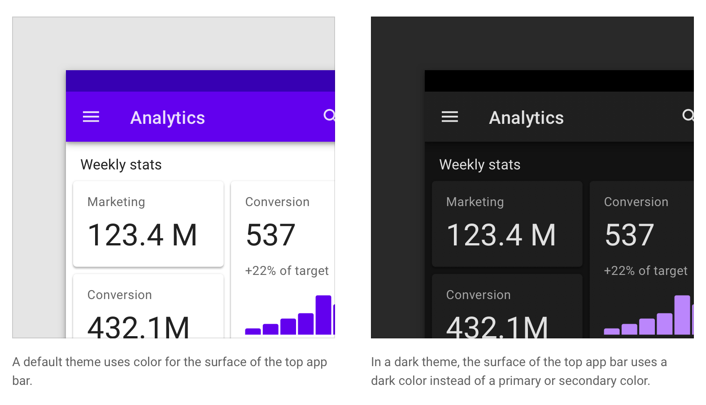

从 Android 10 开始，系统引入了「Dark Theme 深色主题」功能，app 不仅可以在默认的浅色主题模式下浏览，也可以在新的深色主题下浏览。
深色主题简而言之就是在深色的界面上展示低亮度的 UI。
目录
- 目录
- Usage 用法
- Anatomy 结构
- Behavior 行为
- Properties 属性
- UI application UI 应用
- Custom application 自定义应用
- States 状态
- 参考链接
Usage 用法
深色主题在主要的 UI 之间展示了深色的界面，它是默认浅色主题的一个补充。
深色主题减少了屏幕发出的亮度，但仍然满足最小对比度。它通过减少眼部压力、适应当前光照条件、让在黑暗环境中使用屏幕更便利来改善视觉效率。当然也节省了电量，对于 OLED 屏幕通过关掉所有的黑色像素的发光来从中受益。
Principles 原则
- Darken with grey 使用灰色来变暗：使用深灰色而不是纯黑色来表现环境中的海拔感和空间感。
- Color with accents 强调色：在深色主题中使用有限的强调色，大部分的空间都应该是深色的界面。
- Conserve engery 节省能量：在需要注意效率的设备上，比如 OLED 屏幕，通过减少浅色像素的使用来节省电量。
- Enhance accessibility：要考虑到那些特殊的使用深色主题的用户，比如视力障碍人士，通过符号可访问性的颜色对比度标准来实现。
Properties 特性
- Contrast 对比度：深色的界面和纯白色的文本有至少 15.8:1 的对比度；
- Depth 深度：在更好的层级上，组件在表现深度时应使用更浅的界面颜色；
- Desaturation 去饱和：主要颜色（Primary Colors）应该去饱和，以满足 WCAG 至少 4.5:1 的 AA 标准；
- Limited color 限制颜色使用：大的界面使用深色的界面颜色，限制使用强调色。
Anatomy 结构
深色主题的 UI 主要使用深色的表面，一点点强调色。为了保持一个高标准的可用性，界面只会散发出一点点光。
下图是一个界面的颜色示例：
- Background (0dp elevation surface overlay)
- Surface (with 1dp elevation surface overlay)
- Primary
- Secondary
- On background
- On Surface
- On Primary
- On Secondary
Behavior 行为
深色主题可以通过使用一个控件被开启或关闭。
- 为了显眼，可以使用一个 icon 来触发深色主题的开启和关闭；
- 如果为了不那么显眼，可以使用菜单或者设置里的一个开关来控制。
下图是在 top app bar 上设置了一个按钮开关：
下图是在一个弹出菜单中设置了选项：
下图是在 app 的设置中设置了一个开关：
Properties 属性
深色主题应使用深灰色而不是纯黑色作为组件的首要表面颜色（primary surface color）。深灰色的表面更容易表示更大范围的颜色、海拔、深度，因为它更容易在灰色上看清除阴影。
深灰色的表面也减少了眼部的压力，在深灰色表面上的浅色文本比在黑色表面上的浅色文本有更低的对比度。
推荐的深色主题表面颜色是「#121212」。
Elevation 海拔
在深色主题中，组件具有与浅色主题相同的海拔层级和阴影。然而，在深色主题中，不同的海拔层级表示方法不再与以前完全一样。
表面的海拔层级越高（就像离光源越近），表面应该变得越亮，可以查看动态展示↗。
深色主题的表面通过在组件表面上放置一层半透明的白色遮罩（overlay）来展现。

在表面上的遮罩也使得更容易区分组件之间的海拔层级，以看到阴影。遮罩在表面和阴影之间增加了对比度，使每个表面的边缘更明显，可以查看动态演示↗
这些表面遮罩的值为保证最大可读性来设计，同时也确保不同海拔层级之间能够看得清。
遮罩表明了在组件之间的不同海拔层级。
对于主要颜色和次要颜色，不要在使用这些颜色的表面上使用海拔层级遮罩。在深色主题中，阴影仍然是深色以保证投影的准确度。
Accessibility and contrast 可访问性和对比度
深色主题的表面必须足够暗以能够展示白色文本。在文本和背景之间至少应该达到 15.8:1 的对比度。在更高海拔层级（更浅颜色）的表面上，文本应该至少满足 WACG 的 4.5:1 的 AA 对比度要求。
对于那些对电量使用有效率要求的 UI 来说可以使用纯黑色，一些设备（比如配备 OLED 屏幕的可穿戴设备）可以通过关闭像素点来显示黑色从而解压电量，可以查看动态演示↗。
UI application UI 应用
Theme colors 主题颜色
深色主题应该避免使用过饱和的颜色，因为它们与深色表面放在一起不会通过 4.5:1 的最低对比度要求。过饱和的颜色也会造成光学上的振动，增加眼部压力。去饱和的颜色是更好的选择。
Primary color 主要颜色
主要颜色是在你的 app 中的屏幕和组件中最频繁使用的。Material Design 深色主题一般使用主要颜色的 200 色调变种作为基线，这个变种可以在任何海拔高度的表面通过至少 4.5:1 的对比度要求。
具有浅色表面的组件可以使用深色主题主要颜色的某个变种。
Secondary color 次要颜色
次要颜色被用来强调 UI 中的选择部分。在深色主题中，次要颜色也要去饱和以满足至少 4.5:1 的对比度要求。、
Accnet color 强调色
在深色主题中，深色表面几乎占据了 UI 的全部。强调色可以让元素显眼，它们应该被单独应用与需要被强调的核心元素，比如文字或按钮。
可以使用「色盘生成器 color palette generator」来生成颜色主题，它会根据你自定义的主要颜色和次要颜色生成从深色到浅色的一系列颜色变种。你可以从中选择你要用在深色主题中的颜色。


Brand colors 品牌颜色
为了保持品牌辨识度，品牌颜色可以在深色主题中保持饱和度，但应用内的品牌元素应该有所限制，比如只有一两个，例如 logo 或者品牌按钮。通过单独使用品牌颜色，元素可以在层级中保持显眼。
The dark theme baseline palette 深色主题基线色盘
深色主题颜色应该被应用与各个深色主题的 UI，包括下面这些部分
- 颜色：主要颜色、次要颜色、主要颜色变种；
- 表面：背景和组件；
- 状态：比如错误状态；
- 内容：文字排版、图标排版。

在浅色主题和深色主题下不同组成部分颜色的变化：
错误颜色用来表示错误状态。
通常情况下用于文字排版和图标排版的「On colors」表示在其他主题颜色表面上使用的颜色，比如主要颜色上、次要颜色上、表面颜色上、背景颜色上、错误颜色上。默认情况下，深色主题的「On colors」是白色和黑色。
当浅色文本出现在深色背景上时，一般遵照下面的准则：
- 高层级强调：87% 不透明度；
- 中层级强调：60% 不透明度；
- 不可用文本：38% 不透明度。
Custom application 自定义应用
使用较大比例屏幕的组件，比如 app bar、backdrop，可以使用表面颜色作为深色主题的颜色。
当深色主题中需要一个浅色表面时，浅色可以被用在组件表面以突出层级关系。举个例子，深色主题的 snackbar 为了突出显示就可以有一个浅色的表面。因此你可以应用浅色主题的 Surface color 和 On Surface color。
States 状态
「状态」在视觉上通过使用遮罩表达了组件或不可交互元素的状态。在深色主题中，状态也应该使用与浅色主题一样的遮罩值，它们调整后可以满足 AA 的对比度要求。
有两种类型的容器：一种使用「Surface」填充色，另一种使用「Primary」填充色。
Surface Containers
Surface containers 使用「Surface」颜色作为填充色，使用文本或 icon 的颜色作为遮罩颜色。
Primary Containers
Primary containers 使用「Primary」颜色作为填充色，使用白色作为遮罩颜色。
不可用状态
不可用状态的组件都使用 12% 不透明度的白色作为描边颜色和填充颜色，38% 不透明度的白色作为内容颜色，比如文本或 icon。
参考链接
如果你觉得这篇文章对你有所帮助，欢迎请我喝杯咖啡，感谢你的支持😁